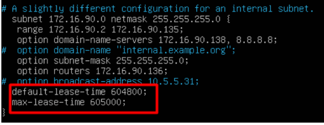

El Protocolo de configuración dinámica de host (DHCP) es un protocolo cliente/servidor que proporciona automáticamente un host de Protocolo de Internet (IP) con su dirección IP y otra información de configuración relacionada, como la máscara de subred y la puerta de enlace predeterminada.
En este reto, tenemos que instalar y configurar un servidor DHCP y después aplicarlo en el packet tracer creado en la fase anterior, es decir la primera. Todo esto, lo haremos a través de una máquina virtual de Ubuntu Server.
Para este reto , será conveniente descargar los siguientes paquetes en nuestra máquina Ubuntu server:
- net-tools [Antes de comenzar la pràctica]
- isc-dhcp-server [Cuando se indique en la documentació]
Además, para la configuración del servidor DHCP, se tendrán que modificar los siguientes archivos, cuando se nos indique en la documentación:
- /etc/netplan/00-netcfg.yaml (Para configurar los adaptadores de red)
- /etc/dhcp/dhcpd.conf (Para configurar el servidor DHCP)
- /etc/default/isc-dhcp-server (Para indicar el adaptador con el que trabajaremos)
- service isc-dhcp- server start (Para iniciar el servidor)
- service isc-dhcp- server status (Para ver el estado del servidor)
- service isc-dhcp- server stop (Para parar el servidor)
1. Instal·lació del servidor DHCP
1. En primer lloc crearem un segon adaptador de red, per aixó ens situarem a sobre de la maquina i clicarem a “Configuración” anem a la pestaña “Red” , seleccionem “Adaptador 2” i posem el adaptador en Red interna. Un dels adaptadors estará en NAT per poder descarregar els paquets necessaris per al servidor i l’altre estara en Red interna per que no hagin problemas
2. Per verificar que hem afegit l'adaptador posarem l'ordre ifconfig -a i veurem enp0s8 que és l'adaptador en xarxa interna
3. Un cop hem vist l'adaptador de xarxa interna toca configurar l'adaptador. Per poder configurar l'adaptador haurem de posar la següent ordre “nano /etc/netplan/08-installer-config.yaml” , dintre del arxiu especificarem el gateway4, la IP estatica al adaptador “enp0s8” i la direccio DNS
4. Per aplicar els canvis utilitzem l’ordre “netplan apply”
2. Configuració del servidor DHCP
1. A continuació desactivem momentàniament la interfície de la xarxa interna i descarreguem i instal·lem el servidor DHCP a la nostra màquina Ubuntu Server. Per desactivar momentàniament la interfície de xarxa “ifconfig enp0s8 down” i per instal·lar el servidor del DHCP “apt-get install isc-dhcp-server” una vegada instalat el servidor toca modificar els següents arxius (/etc/dhcp/dhcpd.conf i /etc/default/isc-dhcp-server) . Modificarem els següents arxius com es mostra a las següents imatges i modifiquem el temps de concessió a una setmana
/etc/dhcp/dhcpd.conf

/etc/default/isc-dhcp-server
2. Per comprobar si funciona el servidor ficarem la comanda “service isc-dhcp- server start” i seguidament “service isc-dhcp- server status”
3. Aplicar DHCP a Packet Tracer
1. Primero para que funcione el servidor dhcp es necesario tener configurado el router, para ello nos iremos al armario de servidores y seleccionamos el router.
2. Una vez hemos seleccionado el router le asignamos una dirección IP al cable que está conectado al switch.
3. Y para acabar nos vamos al servidor, seleccionamos dhcp y configuramos el servidor.
4. Si hemos seguido todos los pasos correctamente entonces en cualquier cliente que pongamos DHCP nos tendría que salir lo configurado anteriormente.